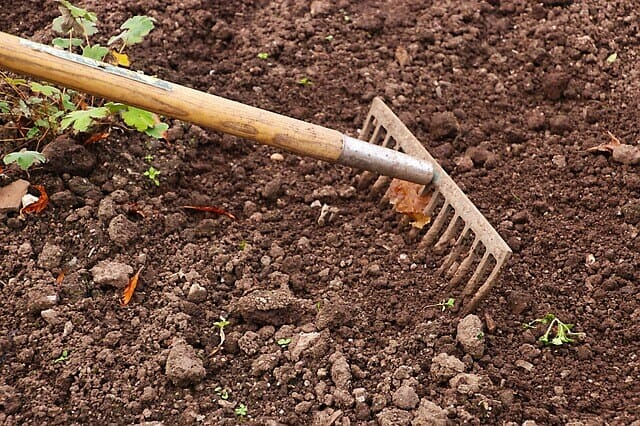
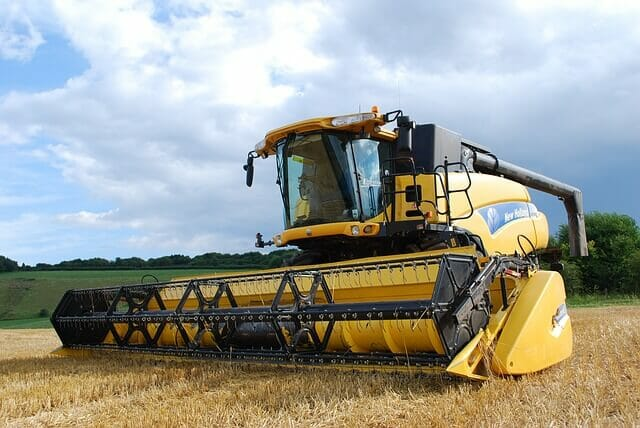

Tractor

Among the list of the farm tools name. The tractor is one of the essential machinery on the farm. Nowadays this is common farming equipment worldwide. We put this one on the top of the farm equipment lists. Its power and size allow it to work in rough terrain, dragging or towing agricultural implements.
Price 6.0-8.0 lacs
Rake
Considering the list of farm tools names, the rake is a very common tool for any type of farm. There are several types of rakes available. The main function of this toothed bar is to loosen and level the ground. The traditional rake has evolved and from being manual or pulled by beasts has happened to fix the tractors.
Price ₹1000
Shovel

This element made of tough and sharp sheet metal. The shovel is one of the most ancient equipments of farmers. The general usage of this equipment is to dig the soil. It is very versatile and can get us out of a hurry at any time, without using the heavy machines.
Price ₹1500-2000
The Harvester
TThe combine harvester is powerful machinery, cutting combs for mowing and a rake. That can rotate on an axis, ahead of the machine. This machine has been able to reduce the use of labor and production costs. It has the ability to work and precision to harvest.
Price 9.0-25.0 lacs